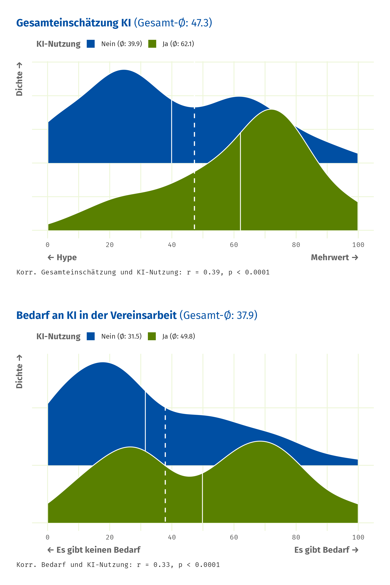
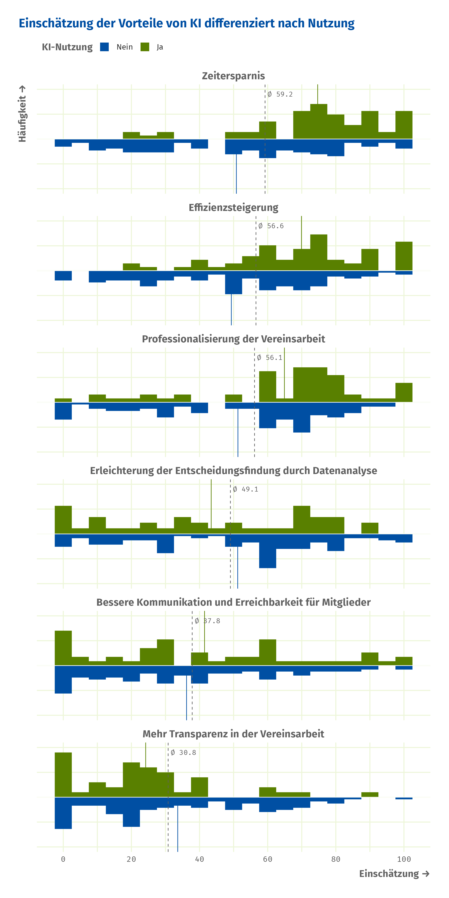
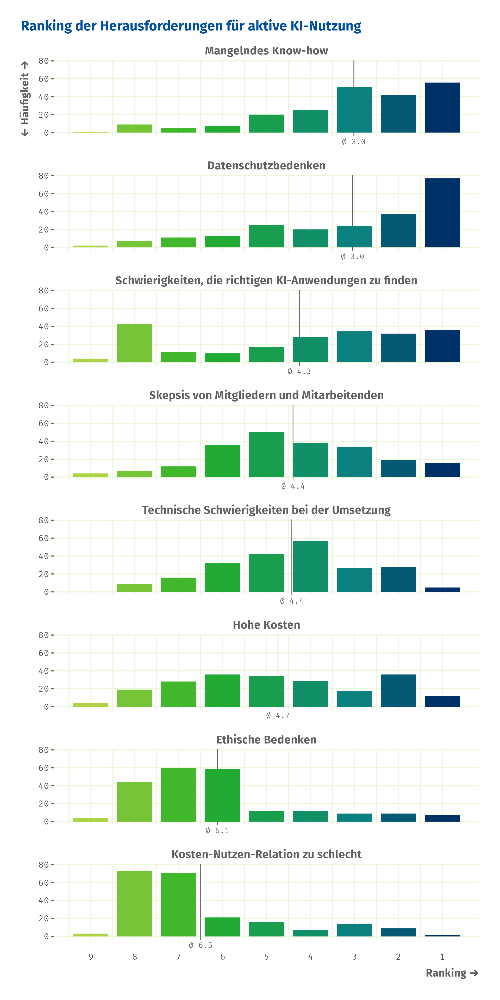

Analyse der Umfrage: Nutzen von KI im Ehrenamt
Anzahl der Befragten: 216
Anteil der Befragten, die KI aktiv nutzen, und Bereiche der KI-Nutzung in der Vereinsarbeit (Aktuell und Gewünscht)
Insgesamt nutzen 32% der Befragten aktiv KI. Den meisten Einsatz findet KI in der Öffentlichkeitsarbeit. 24.5% aller Befragten setzten KI in diesem Bereich ein, gefolgt von Kommunikation (14.4%). In anderen Bereichen, zum Beispiel in der Verwaltung (1.4%) wird KI eher nicht genutzt.
Zusammen mit dem hohen Nutzungsanteil von Anwendungen wie ChatGPT, das von 28% aller Befragten und 91% aller KI-Nutzenden genutzt wird, deutet dies darauf hin, dass KI bis jetzt vor allem für die Erstellung von Texten verwendet wird.
Empfehlungen von ChatGPT werden begründet mit seiner Bedienbarkeit, Schnelligkeit, Kostenlosigkeit und Vielseitigkeit.
Das steht im Gegensatz zu den Bereichen, in denen KI gerne von den Befragten eingesetzt werden würde. Hier wünschen sich 75% aller Befragten einen Einsatz für die Verwaltungsarbeit.
| Anwendung | Anzahl | % aller Befragten | % der KI-Nutzer |
|---|---|---|---|
| ChatGPT (kostenlose Version) | 62 | 28.7% | 91.2% |
| KI-Bildgeneratoren (z.B.: Midjourney, Canva) | 28 | 13.0% | 41.2% |
| Microsoft Copilot | 20 | 9.3% | 29.4% |
| KI basierte Übersetzungstools (z.B.: DeepL) | 19 | 8.8% | 27.9% |
| Gemini (Google) | 14 | 6.5% | 20.6% |
| Sprachassistenten (z.B.: Alexa) | 11 | 5.1% | 16.2% |
| App | Zusammenfassung | Anzahl |
|---|---|---|
| ChatGPT | ChatGPT wird aufgrund seiner Bedienbarkeit, seiner Schnelligkeit, seiner Kostenlosigkeit und seiner Vielseitigkeit empfohlen. | 19 |
| Keine Empfehlung | Keine klare Empfehlung, da die Wahl einer KI-Anwendung von den spezifischen Bedürfnissen des Vereins abhängt. | 6 |
| Canva | Canva wird aufgrund seiner Fähigkeit, Charities zu unterstützen, empfohlen, da es die Integration von KI-Funktionen und die einfache Betreuung von Social-Media-Kanälen bietet. | 5 |
Verhältnis von KI-Nutzung zur Meinung
Die Befragten sind gespaltener Meinung, wenn es um die Gesamteinschätzung von KI angeht. Der Durschnitt der Einschätzung nauf einer Skala von 0 bis 100, wobei 0 für „Hype“ und 100 für „Mehrwert“ steht, liegt bei 47.
Untersucht man die Verteilung der Einschätzungen, offenbart sich eine zweigipflige Verteilung. Dies deutet auf eine gewisse Polarisierung hin.
Die Analyse zeigt weiterhin, dass die Gesamteinschätzung von KI mit deren Nutzung verknüpft ist. Befragte, die KI aktiv nutzen, bewerten diese überwiegend als Mehrwert, während Nicht-Nutzer:innen KI häufiger als Hype wahrnehmen.
Die Nutzung von KI hat einen statistisch signifikanten positiven Einfluss auf die Gesamteinschätzung.
Ähnlich verhält es sich mit der Einschätzung zu dem Bedarf an KI in der Vereinsarbeit, wobei die Befragten den Bedarf durchschnittlich geringer einschätzen (38), als sie KI zwischen Hype und Mehrwert einordnen würden.
Auch hier gibt es Unterschiede zwischen KI-Nutzenden und solchen, die es nicht tun. Mit einem Durchschnitt von 31.5 sind sich Nicht-Nutzende relativ einig, dass es keinen Bedarf an KI in der Vereinsarbeit gibt. Bei den KI-Nutzenden hingegen gibt es diesbezüglich Uneinigkeit. Hier ist der Durchschnitt ungefähr bei 50.
Auch hier hat die Nutzung von KI einen statistisch signifikanten positiven Einfluss auf die Einschätzung des Bedarfs.

Was ermöglicht KI?
Den Nutzen von KI-Anwendungen sehen die Befragten vor allem bei Zeitersparnis, Effizienzsteigerung und Professionalisierung. Diese Möglichkeiten von KI werden außerdem auch oft zusammen als zutreffend eingeschätzt: wenn jemand den Nutzen von KI bei Zeitersparnis sieht, ist es wahrscheinlich, dass auch Effizienzsteigerung oder Professionalisierung als zutreffend bewertet werden.
Betrachtet man den wahrgenommenen Nutzen differenziert nach KI-Nutzung zeigen sich, ähnlich wie bei der Gesamteinschätzung, ein Zusammenhang. Wenn Befragte KI nutzen, ist es wahrscheinlicher, dass sie den Nutzen von KI bei Zeitersparnis, Effizienzsteigerung und Professionalisierung als hoch ansehen. Gering weniger wahrscheinlich ist es jedoch, dass sie Transparenz in der Vereinsarbeit als als Nutzen hoch bewerten.

Correlation of Q8 with KI usage
correlations <- df %>%
select(matches("^Q8_[0-9]+$")) %>%
map_dbl(~ cor(.x, df$ki_usage, use = "pairwise.complete.obs"))
correlations <- set_names(
correlations,
names(df %>% select(matches("^Q8_[0-9]+$")))
)
print(correlations) Q8_1 Q8_2 Q8_3 Q8_4 Q8_5 Q8_6
0.37760485 0.40842699 0.08565472 -0.17464937 -0.12103040 0.24222744
Q8_7
0.59624722 Top Q8 answers are correlated with each other.
# A tibble: 4 × 3
var1 var2 correlation
<chr> <chr> <dbl>
1 Q8_2 Q8_1 0.823
2 Q8_6 Q8_1 0.674
3 Q8_2 Q8_6 0.671
4 Q8_4 Q8_3 0.663KI Challenges
Bei den Herausforderungen von KI hingegen sind sich Nutzende dieser Technologie und solche, die dies nicht tun, relativ einig. Hier werden mangelndes Know-How und Datenschutzbedenken als am zutreffendsten angegeben. Ebenfalls häufig als herausfordernd bewertet ist die Schwierigkeit, die richtige KI-Anwendung zu finden. Hier ist jedoch interessant, dass es eine größere Menge an Leuten gibt, die dies wiederum nicht als herausfordernd bewerten, was in diesem Punkt für Uneinigkeit spricht.
Ethische Bedenken und Kosten-Nutzen-Relation scheinen die Befragten jedoch klar nicht als herausfordernd zu empfinden.

Wenn du einem Entwickler von KI etwas mit auf den Weg geben könntest, was wäre es? Was denkst du, sollte man bei der Entwicklung von KI-Anwendungen besonders berücksichtigen?
In den Antworten auf die Frage, was man Entwickler:innen auf den Weg geben würde, lassen sich drei Themen identifizieren.
Zum einen, entgegen der Einschätzung zu den Herausforderungen bei KI, wünschen sich die Befragten verantwortungsbewusste Entwicklung, vor allem im Hinblick auf die Rolle des Menschen, welcher im Mittelpunkt stehen sollte und wessen Recht bewahrt werden sollten.
Anknüpfend daran betrifft der zweite Schwerpunkt Transparenz und Datenschutz: den Befragten war wichtig, dass mit KI getroffene Entscheidungen und die Verarbeitung von Daten transparent gestaltet sind.
Wiederum übereinstimmend mit der Einschätzung zu errausforderungen bei der Nutzung von KI gibt es einen Wunsch nach Benutzerfreundlichkeit, mit einem besonderen Fokus auf die Zugänglichkeit für ältere Menschen und Nicht-Expert:innen.
| Name | Beschreibung | Anzahl |
|---|---|---|
| KI verantwortungsbewusst entwickeln | Die Befragten betonen, dass KI-Entwickler verantwortungsbewusst vorgehen müssen, um sicherzustellen, dass die Anwendungen ethisch vertretbar sind und die Rechte der Menschen schützen. Sie fordern Transparenz in der KI-Entwicklung, einschließlich der Verwendung von Daten und der Vermeidung von Missbrauch. Gleichzeitig sehen sie die Vorteile von KI bei der Arbeit und in der Gesellschaft, solange diese auf eine verantwortungsbewusste und nachvollziehbare Weise eingesetzt werden. Die Befragten betonen auch, dass KI nicht die Kontrolle übernehmen darf und dass die Anwender immer im Mittelpunkt stehen sollten. Dieses Eintreten für verantwortungsbewusstes Vorgehen bei der KI-Entwicklung und die Betonung der Bedeutung von Transparenz und Menschenrechten spiegelt ein Engagement für ethische und nachhaltige Technologieentwicklung wider. | 40 |
| Einfache Bedienung | Die Befragten betonen die Bedeutung von Usability und Einfachheit in der Entwicklung von KI-Anwendungen. Sie möchten, dass Anwendungen so einfach und verständlich wie möglich sind, damit auch Nicht-Profis sie nutzen können. Insbesondere sollten Anwendungen älteren Menschen zugänglich sein, um ihre Scheu gegenüber KI zu überwinden. Die Befragten betonen auch, dass die Bedienung nicht zu kompliziert sein sollte und dass Lösungen einfach zu implementieren sein sollten, um rasch Mehrwert zu bieten. Dies erfordert, dass die Entwickler die Bedürfnisse ihrer Zielgruppe verstehen und entsprechende Anwendungen entwickeln, die leicht zu bedienen sind und gleichzeitig effektiv sind. | 21 |
| Transparenz und Schutz | Die Clusteranalyse ergibt, dass die Befragten die Bedeutung von Transparenz in der Entwicklung von KI-Anwendungen betonen. Sie fordern Transparenz in der Datenverarbeitung, in der Entscheidungsfindung und in der Verwendung von Quellen. Zudem betonen sie die Bedeutung von Schutz, insbesondere des Kinderschutzes und der Vermeidung von Fakenews. Die Analyse zeigt auch, dass die Befragten die Vermeidung von Fehlinformationen und die Gewährleistung von Verständlichkeit für Benutzer als wichtige Aspekte der KI-Entwicklung betrachten. | 18 |